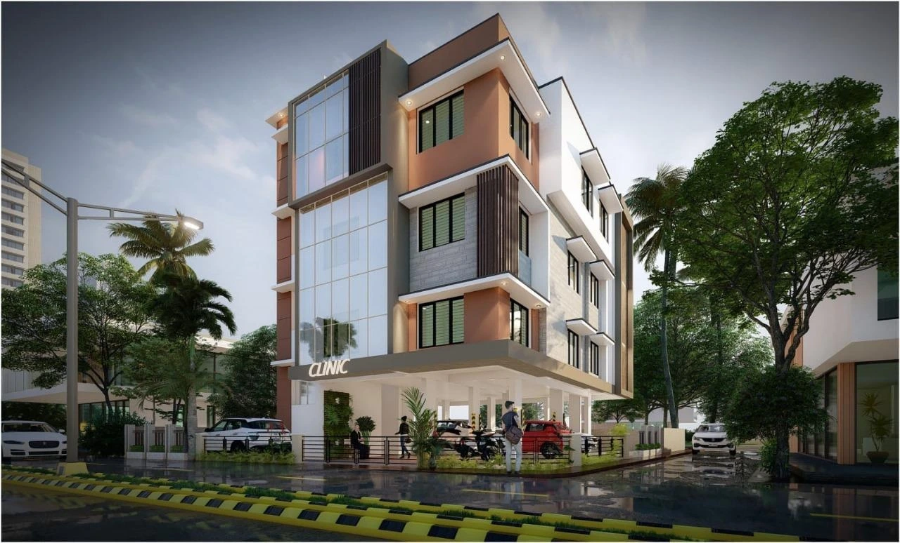

Subramaniyan P
Founder & CEO · Senior Civil Engineer25+ years in civil engineering and project leadership. The visionary whose principles of integrity form the bedrock of the Group - and the final word on any structural decision.
Shrish Group began with a single conviction: a structure is only as sound as the integrity of the people who build it. That principle, set by our founder over 25 years of civil engineering practice, still governs every quotation we issue and every deadline we accept.
Over time the work expanded naturally. Clients who trusted us with buildings asked for reliable transport for their teams and stakeholders. Investors who trusted us with real estate asked for structural due diligence. Instead of outsourcing that trust, we built specialised divisions around it.
Today the Group operates as a hub with focused arms: Shrish Associates for civil engineering, construction and real estate; Shrish Travels for premium 24/7 mobility; a private employee portal for internal operations; and an in-house digital architecture practice that automates and measures all of it.
See the divisions
Four people, four disciplines, one accountable structure.
25+ years in civil engineering and project leadership. The visionary whose principles of integrity form the bedrock of the Group - and the final word on any structural decision.
15+ years in structural and site engineering. Leads civil construction strategy across building and real estate work, ensuring precision from foundation drawings through to handover.
Leads the fleet with a focus on premium, customer-first experiences - verified drivers, maintained vehicles and 24/7 punctuality for local and outstation travel.

Bookmarking Analyst at CAPL (Consolidated Analytics) and the digital architect engineering this ecosystem single-handedly - data analytics, RPA and finance technology, delivered on time and with precision.
Three commitments that decide which work we take on.
Scope, cost and timeline documented before work starts - and revisited in writing whenever reality changes.
Structural decisions are engineered, not estimated. Site quality is reviewed by the people who signed the drawings.
Automation, analytics and digital reporting are treated as core infrastructure, not optional extras.